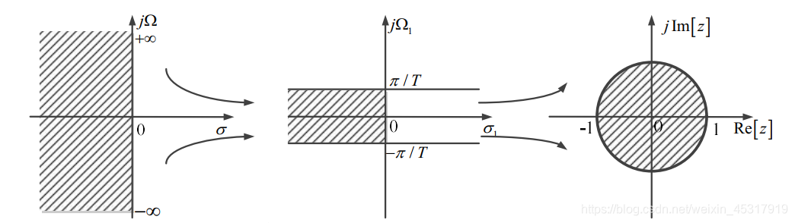
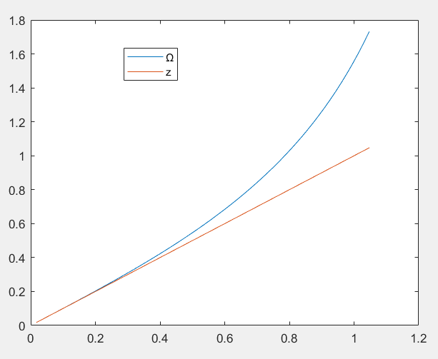

IIR滤波器设计
Table of Contents
前言
IIR（Infinite Impulse Response）数字滤波器是指无限长冲激响应数字滤波器，因其具有良好的幅频响应特性，被广泛应用于通信、控制、生物医学、振动分析、雷达和声呐等领域
IIR滤波器的设计可以通过设计一个模拟滤波器，进而利用脉冲响应不变法或者双线性变换法来进行数字滤波器的设计。
设计思路
通常利用模拟滤波器的理论和设计方法来设计 IIR 数字滤波器。设计过程是：先根据技术指标要求设计出一个相应的模拟低通滤波器，得到模拟低通滤波器的传递函数 $H(s)$ ，然后再按照一定的转换关系将设计好的模拟滤波器的传递函数转换为数字滤波器的系统函数 $H(z)$ 。转换方法有两种：脉冲响应不变法和双线性映射法
利用模拟滤波器设计数字滤波器，就是从已知的模拟滤波器传递函数 $H(s)$ 设计数字滤波器传递函数 $H(z)$ ，这是一个由 s 平面到 z 平面的映射变换，这种映射变换应该遵循两个基本原则
- $H(z)$ 的频响要能模仿 $H(s)$ 的频响，即 s 平面的虚轴应该能映射到 z 平面的单位圆 $e^{j\omega}$ 上
- $H(s)$ 的因果稳定性映射到 $H(z)$ 之后保持不变，即 s 平面从左半平面 $Re(s)<0$ 映射到 z 平面的单位圆内 $|z|<1$
脉冲响应不变法
利用模拟滤波器理论设计数字滤波器，也就是使得数字滤波器能模仿模拟滤波器的特性，这种模仿可以从不同的角度出发。脉冲响应不变法就是从滤波器的脉冲响应出发，使数字滤波器的单位脉冲响应序列 $h(n)$ 模仿模拟滤波器的冲击响应 $h_c(t)$ ，使 $h(n)$ 正好等于 $h_c(t)$ 的采样值，也就是
$$ h[n]=h_c(nT_s) $$定义
时域信号： $h_c(t)$
脉冲信号： $s(t)=\sum_{n=-\infty}^{\infty}\delta(t-nT_s)$
采样时的时域信号： $h_s(t)=h_c(t)s(t)$
采样得到的信号： $h[n]=h_c(t)|_{t=nT_s}=h_c(nT_s)$
推导
$$ h_s(t)=h_c(t)s(t)=h_c(t)\sum_{n=-\infty}^{+\infty}\delta(t-nT_s) $$对上式做 $laplace$ 变换
$$ H_s(s)=\int_{-\infty}^{+\infty}h_c(t)\sum_{n=-\infty}^{+\infty}\delta(t-nT_s)e^{-st}dt\\=\sum_{n=-\infty}^{+\infty}\int_{-\infty}^{+\infty}h_c(t)\delta(t-nT_s)e^{-st}dt\\=\sum_{n=-\infty}^{+\infty}h_c(nT_s)e^{-snT_s} $$$h(n)$ 的 z 变换为
$$ H(z)=\sum_{n=-\infty}^{+\infty}h[n]z^{-n} $$对比上述的 $H_s(s)$ 和 $H(z)$ 可以看出，它们两个之间的转换关系为
$$ z=e^{-sT_s} $$则 $\omega$ 与 $\Omega$ 之间的转换关系为
$$ \Omega=\frac{\omega}{T_s} $$采用脉冲响应不变法将模拟滤波器变换为数字滤波器时，它所完成的 s 平面到 z 平面的变换，正式从 $laplace$ 变换到 z 变换的标准变换关系，即首先对 $H_c(s)$ 做周期延拓，然后再经过 $z=e^{sT}$ 映射关系映射到 z 平面上
该映射关系表明，s 平面上的每一条 $\frac{2\pi}{T}$ 的横带部分，都将重叠地映射到 z 平面的全部平面上。每个横带在左半部分映射到 z 平面单位圆之内，每个横带的右半部分映射到 z 平面的单位圆以外， $j\Omega$ 轴映射到单位圆上，但是 $j\Omega$ 轴上每一段 $\frac{2\pi}{T}$ 都对应于绕单位圆一周。则相应的频率变换关系为 $\omega=\Omega T_s$ ，显然 $\omega$ 与 $\Omega$ 为线性关系。其中 $\omega$ 为数字域频率， $\Omega$ 为模拟域频率
该关系式反映的是 $H_c(s)$ 的周期延拓与 $H(z)$ 的关系，而不是 $H_c(s)$ 本身与 $H(z)$ 的关系，因此，在使用脉冲响应不变法时，从 $H_c(s)$ 到 $H(z)$ 并没有一个由 s 平面到 z 平面的简单代数映射关系，即没有一个 $s=f(z)$ 的代数关系式
数字滤波器的频响不是简单地重现模拟滤波器的频响，而是模拟滤波器频响的周期延拓，周期为 $\Omega_s=\frac{2\pi}{T_s}=2\pi f_s$ ，即
$$ H(e^{j\omega})=\frac{1}{T_s}\sum_{n=-\infty}^{\infty}H_c(j\Omega+j\frac{2\pi m}{T}) $$根据香农采样定律，如果模拟滤波器的频响带限于折叠频率的 $\frac{\Omega_s}{2}$ 之内，即
$$ H_c(j\Omega)=0\quad |\Omega|\geq \frac{\pi}{T_s} $$这时数字滤波器的频响才能不失真地重现模拟滤波器地频响（在折叠频率以内）
$$ H(e^{j\omega})=\frac{1}{T}H_c(j\frac{\omega}{T})\quad|\omega|<\pi $$任何一个实际的模拟滤波器，其频响都不可能时真正带限的，因此不可避免地存在频谱地交叠，即频谱混淆，这时数字滤波器的频响将不同于原模拟滤波器的频响而带来一定的失真。模拟滤波器频响在折叠频率以上衰减越大，失真则越小，这时采用脉冲响应不变法设计的数字滤波器才能有更好的效果
缺点
频谱交叠产生的混淆，这时从 s 平面到 z 平面的标准变换 $z=e^{sT}$ 的多值对应关系导致的
matlab代码
|
|
双线性变换法
推导
为了克服脉冲响应不变法的缺点，设想变换分为两步：
- 将整个 s 平面压缩到 s1 平面的一条横带上
- 通过标准变换将此横带变换到整个 z 平面上去
由此建立的 s 平面与 z 平面的一一对应的单值关系，消除了多值性，也就消除了混淆现象。为了将 s 平面的 $j\Omega$ 轴压缩到 s1 平面的 $j\Omega$ 轴上的 $-\frac{\pi}{T_s}\sim \frac{\pi}{T_s}$ 一段上，可以通过以下正切变换实现
$$ \Omega=C\times \tan(\frac{\Omega_1T_s}{2}) $$此处 $C$ 为待定系数，通常可以选取为 $C=\frac{2}{T_s}$ 。用不同的方法确定 $C$ 可以使得模拟滤波器频率特性与数字滤波器的频率特性在不同的频率点有对应关系
经过这个变换之后，当 $\Omega_1$ 在 $-\frac{\pi}{T_s}\sim \frac{\pi}{T_s}$ 段变化时， $\Omega$ 在 $-\infty\sim\infty$ 之间变动，映射了整个 $j\Omega$ 轴，这一解析关系延拓到整个 s 平面，即得到 s 平面向 s1 平面的映射关系
$$ s=C\times \tan(\frac{s_1T}{2})\\=C\times\frac{\sin\frac{s_1T}{2}}{\cos\frac{s_1T}{2}}\\=C\times\frac{e^{j\frac{s_1T}{2}}-e^{-j\frac{s_1T}{2}}}{e^{j\frac{s_1T}{2}}+e^{-j\frac{s_1T}{2}}}\\=C\times\frac{1-e^{-js_1T}}{1+e^{-js_1T}} $$再将 s1 平面通过标准变换映射到 z 平面，也就是
$$ z=e^{sT} $$最后得到 s 平面到 z 平面的单值映射关系如下
$$ \left\{\begin{aligned}&s=\frac{2}{T}\frac{1-z^{-1}}{1+z^{-1}}\\&z=\frac{1+\frac{T}{2}s}{1-\frac{T}{s}s}\end{aligned}\right. $$这就是双线性变换
- 第一次是将 $\Omega$ 从 $+\infty$ 变换到 $\frac{\pi}{T}$ ，从 $-\infty$ 变换到 $-\frac{\pi}{T}$
- 第二次是将 S 域的左半平面映射到 Z 域的单位圆内
变换过程如图所示

优点
不存在频率混叠，由于 s 平面与 z 平面一一单值对应，s 平面的虚轴 $j\Omega$ 对应于 z 平面单位圆的一周，s 平面的 $\Omega=0$ 对应于 z 平面的 $\omega=0$ ， $\Omega=\plusmn\infty$ 对应于 z 平面的 $\omega=\plusmn\pi$ ，即数字滤波器的频率响应终止于折叠频率处，所以双线性变换不存在频谱混叠效应
靠频率的严重非线性关系得到 s 平面与 z 平面的单值一一对应关系，整个 $j\Omega$ 轴单值对应于单位圆一周，这个频率关系是 $\Omega=C\times\tan(\frac{\omega}{2})$ ，其中 $\omega$ 和 $\Omega$ 为非线性关系
在 0 频率附近， $\omega$ 和 $\Omega$ 接近于线性关系，当 $\Omega$ 进一步增加时， $\omega$ 增长变得缓慢。当 $\Omega\rightarrow \infty$ 时， $\omega=\pi$ ， $\omega$ 终止于折叠频率处。所以双线性变换不会出现由于高频部分超过折叠频率而混淆低频部分的现象

缺点
由于 $\omega$ 与 $\Omega$ 之间的非线性关系，导致数字滤波器的幅频响应相对于模拟器的幅频响应有畸变。对于一个模拟微分器，它的幅值与频率时线性关系，但是经过双线性变换之后，不能得到数字微分器。另外，一个线性相位的模拟滤波器经过双线性变换之后，滤波器就失去了原有的线性相位特征。
但是，大多数滤波器都有分段常数的频响特性，如低通，高通，带通和带阻等，它们在通带内需要一个衰减为 0 的常数特性，在阻带部分需要一个逼近一个衰减为 $\infty$ 的常数特性，这种滤波器经过双线性变换之后，虽然频率发生了非线性的变化，但是幅值仍旧保持分段常数特性
matlab代码
|
|
设计
利用 matlab 来设计对应的滤波器
贝塞尔
整体设计
|
|
巴特沃斯
阶数估计
|
|
整体设计
|
|
切比雪夫 I 型
阶数估计
|
|
整体设计
|
|
切比雪夫 II 型
阶数估计
|
|
整体设计
|
|
椭圆
阶数估计
|
|
整体设计
|
|